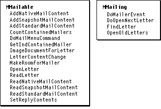
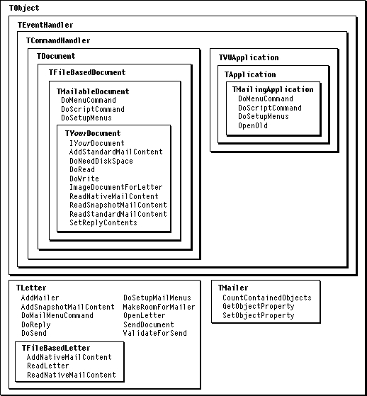

Overview
The AOCE Standard Mail Package is a component of the PowerTalk system software. The Standard Mail Package provides a sophisticated electronic-mail interface that can be used to add a mailer to any window. MacApp's PowerTalk support builds on the Standard Mail Package to enable a user to add a mailer to a document view. A document with an attached mailer is called a letter. Users can add or delete a mailer, can send a letter as electronic mail, and can open, reply to, or forward a letter. Each of these operations is specified by a command from the Mail menu.MacApp encapsulates much of its PowerTalk support in two mixin classes,
MMailingandMMailable. TheTMailingApplicationclass mixes inMMailing, and theTMailableDocumentclass mixes inMMailable. Figure 29-1 shows some of the important methods ofMMailableandMMailing, while Figure 29-2 shows other classes and methods used in working with mailers.MacApp's PowerTalk support is described in detail in "PowerTalk Mailers," beginning on page 192. For more information about PowerTalk, the Standard Mail Package, and mailers, see Inside Macintosh: AOCE Application Interfaces.
Figure 29-1 PowerTalk mailer mixin classes

Figure 29-2 PowerTalk mailer classes and methods
